1. 맞춤 인터뷰의 정의와 위치
맞춤 인터뷰는 고객의 의견을 묻는 일반 인터뷰가 아니라, 현장 Evidence를 사람의 경험·판단 기준·예외 처리·책임 구조·실행 조건과 연결하는 구조화 질문 과정입니다.
무엇을 보는가현장에서는 실제로 어떤 판단과 행동이 일어나는가?
왜 그런가공식 절차와 다른 이유와 반복되는 예외는 무엇인가?
누가 책임지는가누가 판단하고 승인하며 실행하는가?
어떻게 구조화하는가답변을 객체·규칙·AI·워크플로로 어떻게 바꾸는가?
01 온보딩 → 02 자료 → 03 2A4 → 04 현장 탐색 → 05 맞춤 인터뷰 → 06 온톨로지 → 07 AI 판단 → 08 Agent → 09 워크플로 → 10 UI·데이터 → 11 MVP → 12 Bootcamp → 13 자산화
누구에게 무엇을 물어야 현장의 암묵지와 판단 기준을 실행 가능한 구조로 바꿀 수 있는가?
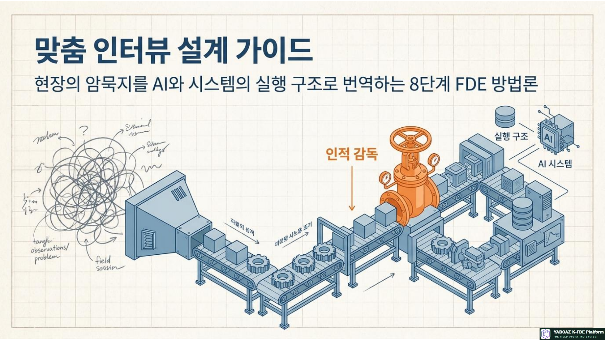
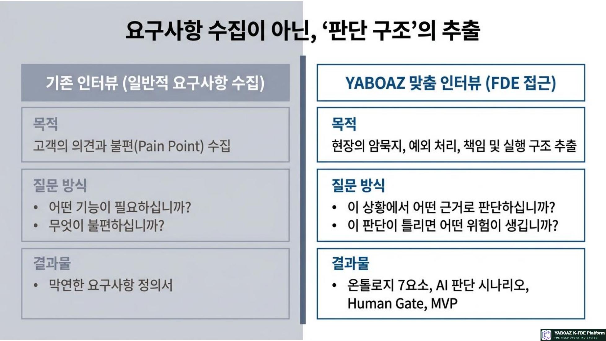
2. 핵심 산출물과 기본 흐름
인터뷰 설계표대상자별 목적·Evidence·질문·도출 결과
역할별 질문지사용자·실행자·숙련자·관리자·데이터·시스템 질문
인터뷰 기록지질문·답변·근거·해석·추가 확인
암묵지·판단 기준숙련자가 경험으로 판단하는 신호와 기준
예외·승인 구조표준 절차 밖 상황과 책임·권한
구조화 후보온톨로지·AI 판단·Human Gate·MVP 후보
Evidence → 질문 → 답변 → 판단 기준 → 온톨로지 → AI 판단 → 워크플로 → MVP
01
목적 설정
이번 인터뷰로 확인할 문제·원인·판단·예외·권한·데이터·AI·MVP를 정합니다.
02
대상자 분류
역할별로 알고 있는 정보와 책임이 다르므로 같은 질문을 반복하지 않습니다.
03
Evidence 기반 질문
관찰 사실과 문제 신호에서 질문을 시작합니다.
04
진행·검증·연결
답변의 사실성을 확인하고 온톨로지·AI·MVP 후보로 전환한 뒤 승인합니다.
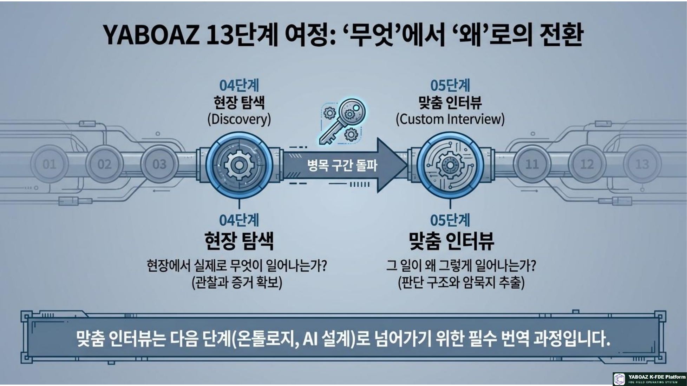
3. 인터뷰 목적과 대상자 분류
목적 유형
| 목적 | 확인 내용 | 예시 |
|---|---|---|
| 문제 확인 | 고객이 말한 문제가 실제 문제인가 | 대피 안내 지연이 실제 병목인가 |
| 원인 확인 | 문제가 발생하는 구조적 원인 | 센서와 공간 정보가 단절되었는가 |
| 판단 기준 | 사람이 무엇을 근거로 판단하는가 | 오경보와 실제 위험 구분 |
| 예외·권한 | 표준 밖 상황과 승인자 | 관리자 부재 시 승인 |
| 데이터·AI | 필요한 입력과 AI 후보 | 센서·위치·인원·경로 |
| MVP | 가장 먼저 구현할 최소 기능 | 관리자 승인 기반 경로 안내 |
대상자 유형
최종 사용자불편·사용 경험·화면 이해도
현장 실행자실제 순서·병목·예외
숙련자암묵지·판단 기준·우회업무
관리자책임·승인·성과 기준
데이터 소유자출처·품질·갱신·접근
시스템 관리자화면·권한·로그·연동
의사결정자목표·투자·리스크
위험 책임자보안·안전·법무·감사
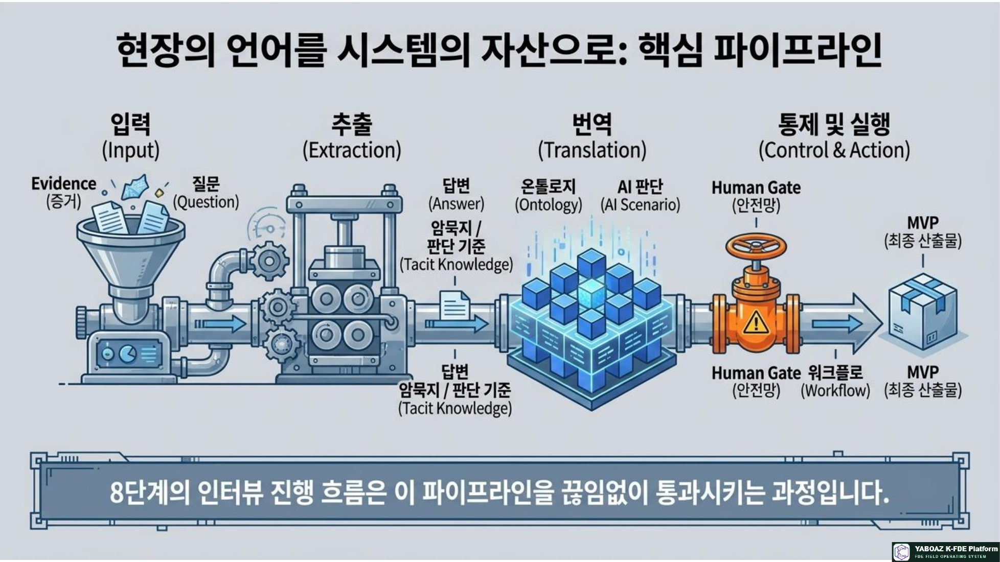
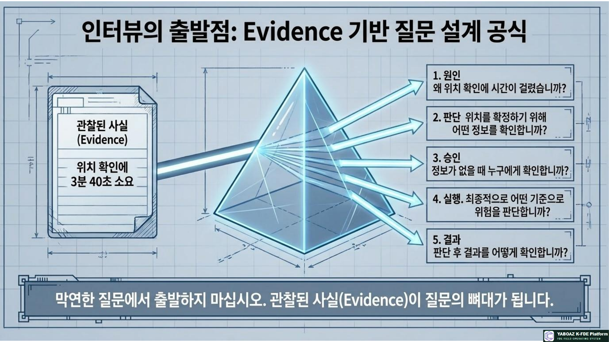
4. Evidence 기반 질문 설계
맞춤 인터뷰는 막연한 의견에서 출발하지 않고 현장 탐색에서 발견된 Evidence에서 출발합니다.
| Evidence | 확인 질문 | 도출 목적 |
|---|---|---|
| 센서 알림 후 위치 확인에 3분 40초 | 왜 위치 확인에 시간이 걸렸습니까? | 정보 병목 |
| 관제 화면에 구역명 없음 | 평소 위치를 어떻게 확인합니까? | 우회업무 |
| 전체 방송만 송출 | 상황별·대상별 안내가 가능합니까? | 워크플로 후보 |
| 담당자별 위험 기준 다름 | 위험도를 판단하는 기준은 무엇입니까? | 규칙 후보 |
관찰한 사실 → 왜 그런가 → 어떻게 판단하는가 → 누가 승인하는가 → 무엇을 실행하는가 → 결과를 어떻게 확인하는가
질문 예시센서 알림 후 위치 확인에 3분 40초가 걸렸습니다. 어떤 정보를 확인해야 위치를 확정할 수 있습니까? 정보가 없으면 누구에게 확인하며 어떤 기준으로 위험 여부를 판단합니까?
질문 유형
개방형경험과 맥락 파악
확인관찰 사실 검증
원인구조적 원인 확인
판단의사결정 기준 확인
예외표준 밖 상황 확인
비교공식·실제 차이 확인
위험자동화·승인 조건
성과KPI와 효과 확인
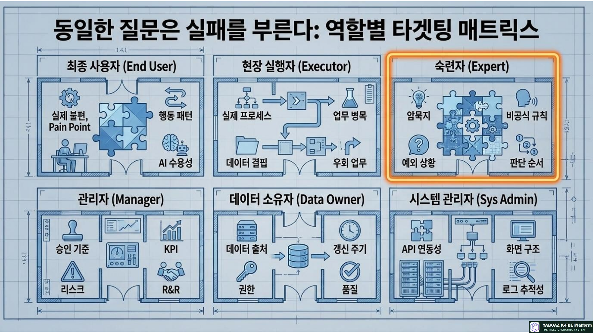
5. 역할별 질문 설계
최종 사용자가장 불편한 점은? 어떤 정보가 있으면 빠르게 행동하는가? 알림을 신뢰하는가? 실제 어떤 행동을 하는가? AI 추천을 신뢰하려면 무엇이 필요한가?
현장 실행자실제 업무 순서와 병목은? 어떤 정보가 없으면 멈추는가? 전화·메신저로 우회하는 일은? 예외와 반복 판단은? 자동화·사람 승인 영역은?
숙련자초보자가 놓치지만 알아차리는 신호는? 위험 구분 기준은? 문서에 없는 원칙은? 자주 발생하는 예외와 금지 행동은?
관리자성공 KPI는? 운영 리스크는? 승인 필요 업무는? 책임이 불명확한 업무는? 확산·투자·자동화 기준은?
데이터 소유자주요 데이터와 생성 시스템은? 입력·수정자는? 갱신주기·품질·접근권한은? 개인정보와 AI 사용 가능 범위는?
시스템 관리자사용 화면과 로그는? API·연동·권한·변경이력은? 알림은 어떻게 작동하며 MVP에 먼저 연결할 기능은?
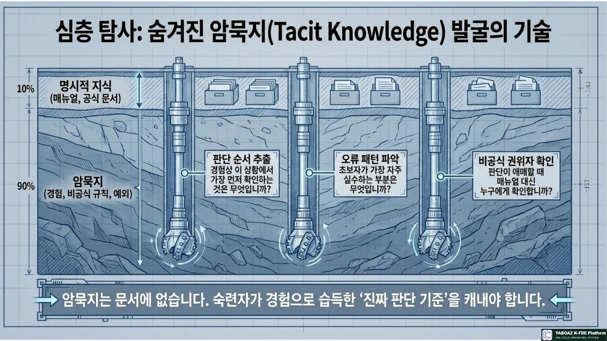
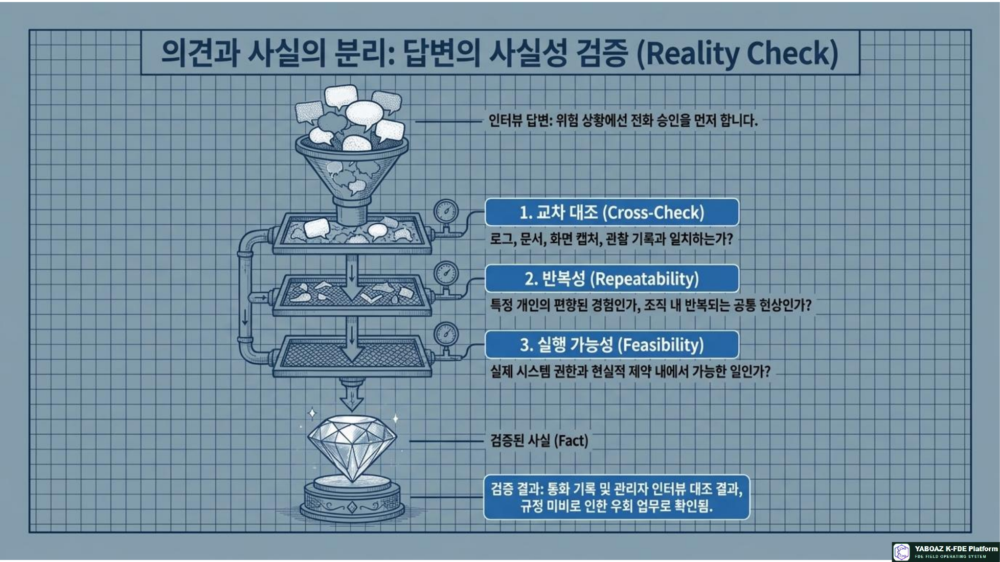
6. 암묵지 발굴과 답변 검증
암묵지는 문서에는 없지만 숙련자가 경험으로 알고 있는 판단 기준입니다.
판단 순서이 상황에서 가장 먼저 확인하는 것은? 위험하다고 느끼는 순간은?
오류·예외초보자의 실수는? 과거 사고 사례는? 반복되는 예외는?
규칙·금지문서에는 없지만 지키는 원칙은? 절대 하면 안 되는 행동은?
AI·교육AI가 도울 부분과 금지 판단은? 후배에게 가르칠 기준표는?
답변의 사실성 검증
| 검증 항목 | 확인 방법 |
|---|---|
| 사실 여부 | 로그·문서·화면·관찰과 비교 |
| 반복성 | 여러 사례에서 반복되는지 |
| 대표성 | 개인 경험인지 조직 현상인지 |
| 최신성 | 현재도 유효한지 |
| 편향 | 답변자의 이해관계 확인 |
| 실행 가능성 | 시스템·권한으로 가능한지 |
| 위험성 | 오적용 시 피해 가능성 |
검증 예시“위험 상황에서는 전화 승인을 먼저 한다”는 답변은 관리자 인터뷰·통화 기록과 대조하고, 공식 승인 규정을 추가 확인한 뒤 부분 확인으로 기록합니다.
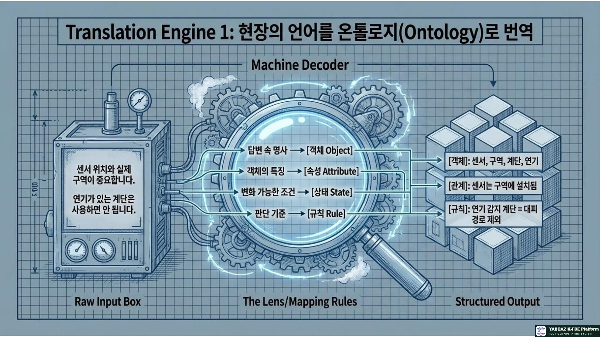
7. 답변을 온톨로지·AI·Human Gate로 연결
온톨로지 7요소 변환
| 인터뷰 답변 | 구조화 결과 |
|---|---|
| 관리자가 위험 여부를 판단한다 | 객체: 관리자 |
| 센서 위치와 실제 구역이 중요하다 | 객체: 센서·구역 / 관계: 센서는 구역에 설치 |
| 연기 있는 계단은 사용하면 안 된다 | 규칙: 위험 계단을 경로에서 제외 |
| 정상·주의·위험으로 나눈다 | 상태: 정상·주의·위험 |
| 센서가 울리면 담당자가 확인한다 | 이벤트: 감지 / 행동: 확인 요청 |
| 승인 후 방송한다 | 행동: 방송 / 규칙: 승인 후 실행 |
답변 속 명사 → 객체
객체의 특징 → 속성
객체 간 연결 → 관계
변화 조건 → 상태
발생하는 일 → 이벤트
판단 기준 → 규칙
실행 업무 → 행동
객체의 특징 → 속성
객체 간 연결 → 관계
변화 조건 → 상태
발생하는 일 → 이벤트
판단 기준 → 규칙
실행 업무 → 행동
AI 판단 시나리오
판단 질문이 알림은 실제 위험 가능성이 높은가?
입력 데이터센서 위치·과거 오경보·CCTV·주변 상태
판단 기준복수 센서 감지·연기·열 감지·위험 경로
추천 결과위험도·안전 경로·우선 알림 대상
Human Gate관리자 승인·위험 등급 검토
실행·KPI안내 발송·로그 저장·확인시간 측정
Human Gate 질문
위험잘못 실행하면 피해가 큰가? 법적 책임이 생기는가?
권한누가 승인하며 대체 승인자는 누구인가?
근거승인자가 반드시 확인할 Evidence는 무엇인가?
기록승인과 실행 이력을 어떻게 남길 것인가?
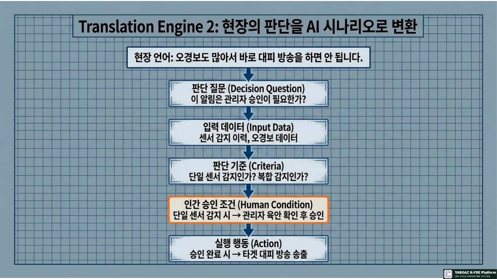
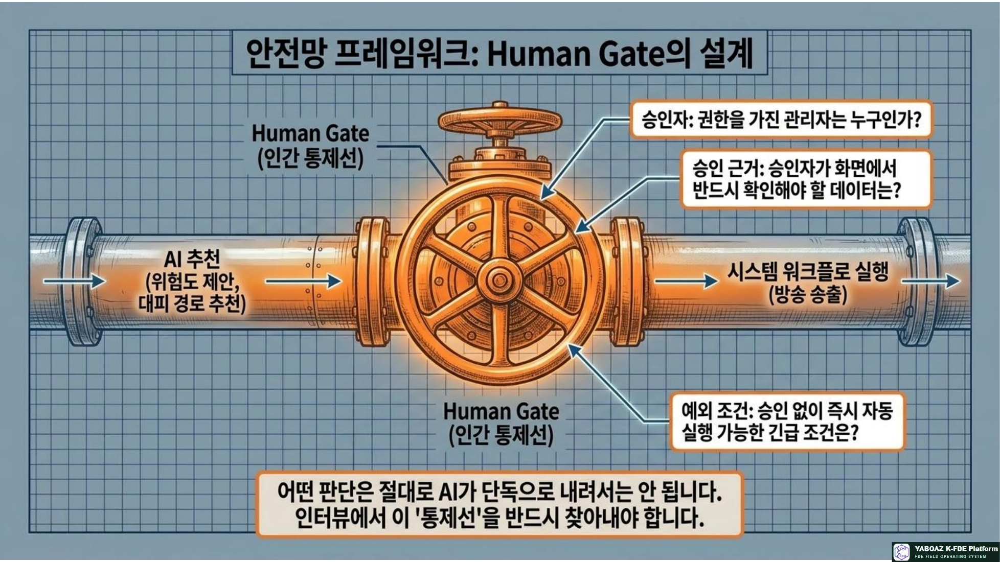
8. 인터뷰 기록·MVP·실습
맞춤 인터뷰 기록지
기본정보프로젝트·일시·대상자·역할·목적
근거관련 Evidence·관찰 사실
답변핵심 답변·해석·추가 확인
구조화암묵지·판단 기준·예외·승인 조건
연결데이터·온톨로지·AI·Human Gate
실행MVP 후보·후속 인터뷰·책임자
MVP 후보 선정 기준
중요도해결 시 성과가 좋아지는가?
반복성여러 사용자에게 반복되는가?
데이터필요 데이터가 있는가?
기간2~4주 내 구현 가능한가?
승인책임자가 승인 가능한가?
위험Human Gate로 통제 가능한가?
자산화다른 프로젝트에 재사용 가능한가?
완료 체크리스트
인터뷰 목적과 대상자 역할 분류
Evidence 기반 질문 설계
개방형·확인·판단·예외 질문 포함
암묵지와 판단 기준 도출
예외와 승인 조건 확인
필요 데이터와 권한 확인
답변의 사실성 검증
온톨로지 후보 도출
AI 판단 후보 도출
Human Gate 후보 도출
MVP 후보 도출
다음 온톨로지 단계 산출물 정리
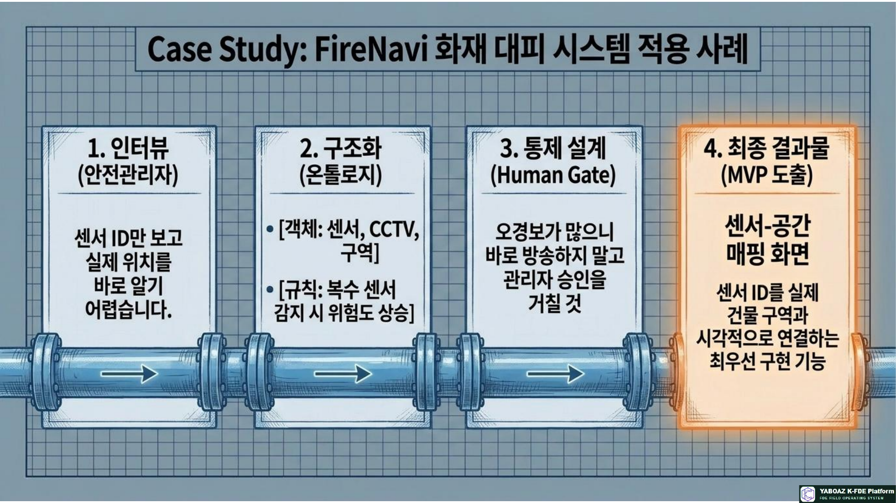
9. FireNavi 인터뷰 적용 예시
안전관리자 답변센서 위치와 CCTV를 먼저 확인하고, 복수 센서가 울리거나 연기·열이 동시에 감지되면 즉시 방송한다.
구조화 결과객체: 센서·CCTV·구역 / 규칙: 복합 감지 시 위험도 상승 / Human Gate: 관리자 승인
입주자 답변전체 방송보다 자신이 있는 위치 기준의 계단 안내가 필요하며 관리자 승인 표시가 있으면 더 신뢰한다.
MVP 후보센서-공간 매핑, 위험 경로 제외, 관리자 승인, 개인화 대피 안내
Evidence → 질문 → 암묵지 → 판단 기준 → 온톨로지 → AI 판단 → Human Gate → MVP
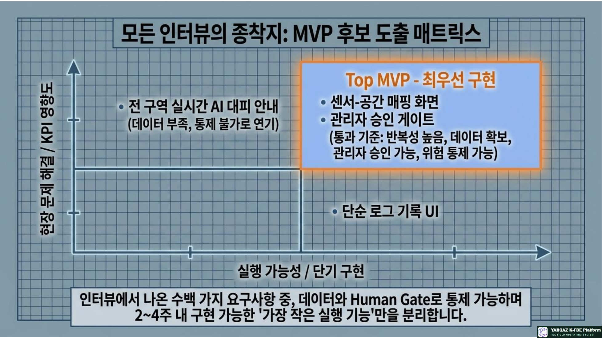
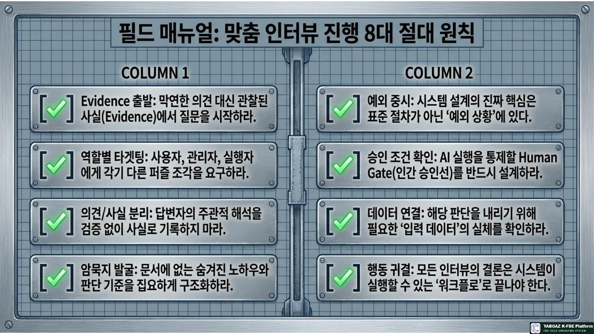
10. 최종 정의
맞춤 인터뷰
맞춤 인터뷰는 현장 사람의 경험 속에 숨어 있는 판단 기준·예외 처리·승인 조건·실행 규칙을 찾아 AI가 이해하고 사람이 승인할 수 있는 구조로 바꾸는 과정입니다.
사람의 경험 → 판단 기준 → 데이터 조건 → 승인 구조 → 실행 행동 → 플랫폼 자산
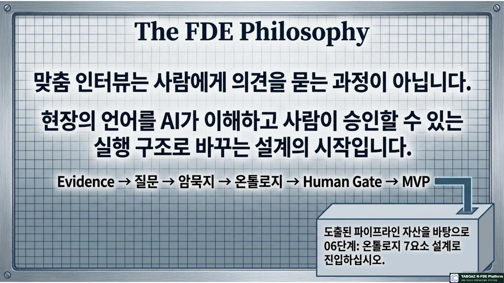